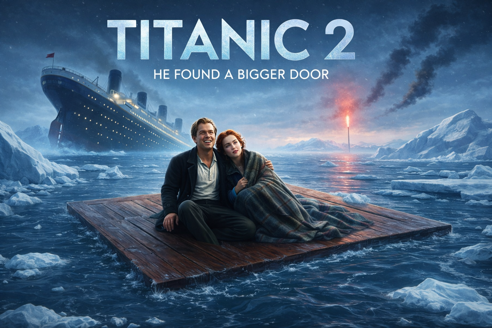

TITANIC 2 Jack est vivant.
Il a trouvé en réalité une plus grande planche depuis le début,
dans l'eau glacée de l'Atlantique Nord. Rose, convaincue de sa mort, a refait sa vie, eu des
enfants, des petits-enfants, et est devenue une vieille dame
respectée racontant son histoire à qui voulait l'entendre.
Vingt-sept ans plus tard, Jack — légèrement hypothermique
mais globalement en forme — débarque à la porte de Rose dans
une maison de retraite huppée de Santa Barbara. La réunion
est émouvante. Très brève.
Car Jack sort aussitôt de sa
poche une épaisse liasse de documents juridiques : une
demande de remboursement en bonne et due forme pour
hypothermie sévère, traumatisme psychologique, perte de
revenus sur trois décennies, et préjudice moral lié à
l'abandon délibéré sur planche flottante.
Rose conteste. Son avocat aussi. S'ensuit un procès fleuve retransmis en direct
sur toutes les chaînes américaines, où l'on reparle du
iceberg, de la planche, de la place disponible dessus, et où
des experts en flottaison sont convoqués à la barre.
Une suite romantique, juridique, et profondément bouleversante
sur ce que l'amour peut coûter.

PLAY